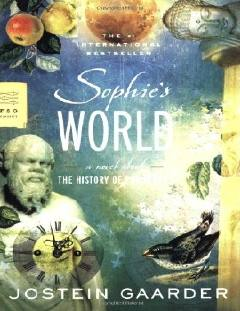

SWFalsafa tarixini qiziqarli roman shaklida hikoya qiluvchi jahon adabiyoti durdonasi.
O'smir qiz Sofi Amundsen o'z pochta qutisida 'Sen kimsan?' degan sirli xatni topib oladi. Bu voqea uni falsafa tarixi bo'ylab qiziqarli va hayratlanarli sayohatga boshlaydi, unda u dunyo va o'zi haqidagi fundamental savollarga javob izlaydi.